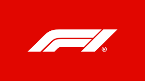

Introduction
Formula one world championship is the highets class in the car racing sport. Formula 1 cars can reach speed well over 300 km/h.
Formula 1 consist of series of races and an indiviual race is called "Grand Prix" (Big Price). The race is held on circuits and also on closed street circuits. The total achieved points at the end of the season determine the worldchamionship for the driver and for the constructor. Both drivers and constructors must be in possesion of a super license. The drivers needs to be minimum 18 years old and has to have a minimum 40 license points at another race class.
Europe is the traditional center of Formula 1, where almost all teams have their origins and factories and where about half of all races are held. The reach of Formula 1 has expanded greatly in recent years and grands prix are held all over the world. Some races in Europe and America have been canceled in favor of Asia and the Middle East. In 2009, nine of the eighteen races were held outside Europe.
The first Formula 1 World Championship was won in 1950 by the Italian Giuseppe Antonio Farina in his Alfa Romeo Alfetta 159. It is remarkable that Alfa Romeo won all victories during this first championship. He won by a small margin over his Argentinian teammate Juan Manuel Fangio.

Formula 1 weekend structure
A typical F1 weekend follows like:
Thursday - Media Day
Thursdays drivers and teams hold a press conference and do interviews.
Friday - FP1 & FP2
There are 2 free practice sessions where teams test different strategies, setups and collect cruicial date to optimize their performace for qualifying for the race.
Saturday - FP3 & Qualifying
There is one final practice session to see if a team's setup is good for qualifying and the race, after FP3 there is qualifying session to determine the starting positions of each driver.
Sunday - Race Day
Race day, this is the main event where drivers try to be the first to complete the total amount of laps in the race, the first to complete the laps wins the Grand Prix.
Point system
The top 10 in a F1 race can score points.
- 1ST Place - 25 Point
- 2ND Place - 18 Points
- 3RD Place - 15 Points
- 4TH Place - 12 Points
- 5TH Place - 10 Points
- 6TH Place - 8 Points
- 7TH Place - 6 Points
- 8TH Place - 4 Points
- 9TH Place - 2 Points
- 10TH Place - 1 Point
Championship
Driver,s championship
Driver's earn points throughout the season based on their race performance, The driver with the most points at the end of the season is the World Champion. Lewis Hamilton & Micheal Shumacher have the most world championshis on their name with 7 World championships each.
constructor's championship
The F1 teams earn points based on both their drives performance in each race throughout the season, the team with the most points at the end of the season wins the constructors championship.